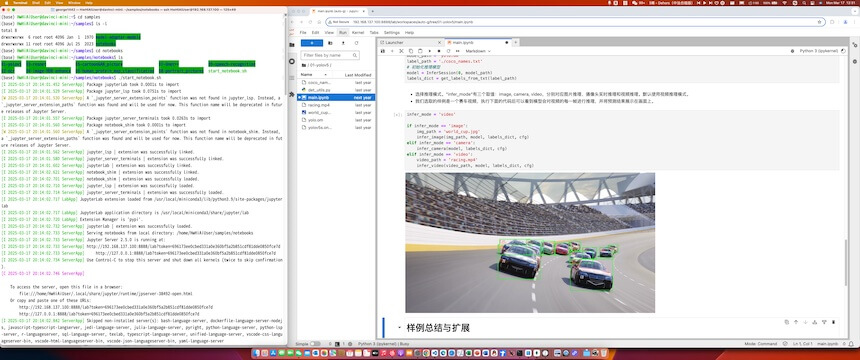

1、SSH登录开发板
1.1 将烧录好的 SD 卡，插入开发板
断电状态下（即开发板没有通电源），插入已经烧录好的 SD 卡。如何烧录，可参考官网相关链接，此处从略。
1.2 给开发板插上电源
插上电源后，开发板上的三个绿灯，会逐个点亮。稍等一会后，三个绿灯都亮了，则表示启动成功。
1.3 用网线连接电脑和开发板
1.3.1 （可选）电脑如果没有空闲网口，可在电脑 USB 上插 USB转网口 的转接器，以获得一个空闲网口。
1.3.2 网线一端，插入电脑的空闲网口。
1.3.3 网线另一端，插入开发板的网口。开发板有 2 个网口，上下排列，要插入上面那个网口。
1.4 设置电脑的 IP 地址，以便通过网线访问开发板
把电脑的 IP 地址，设置为和开发板同一个网段的地址。
打开：设置 | 网络。找到 USB 网口对应的网络适配器，修改 IP 地址的相关设置。
- 设置 [DHCP]：手动
- 设置 [IPV4]：ON
-
设置 [IP]：192.168.137.xxx。
可用的网址可以是：
- 192.168.137.0：不可用，因为 0 是网络号。
- 192.168.137.1 ~ 192.168.137.99：可用。比如，可以将电脑的 IP 地址设置为 192.168.137.1，或者192.168.137.2，或者192.168.137.3，……，或者192.168.137.99。
- 192.168.137.100：不可用，因为被开发板占用了。开发板上下排列的2个网口，上面那个网口的 IP 地址固定为 192.168.137.100。
- 192.168.137.101 ~ 192.168.137.254：可用。比如，可以将电脑的 IP 地址设置为 192.168.137.101，或者192.168.137.102，或者192.168.137.103，……，或者192.168.137.254。
- 192.168.137.255：不可用，因为 255 是广播地址。
-
设置 [子网掩码]。设置长度或掩码，视操作系统版本不同而不同。
- 设置 [子网掩码长度]： 24
- 或者 [子网掩码]： 255.255.255.0
-
设置 [网关]。
视操作系统版本不同而不同。有的要求设置，否则无法保存。
如要求设置，可填写 192.168.137.xxx。xxx在上述可选的取值范围内，并且和本机设置的 IP 地址不同即可，因为网关实际上不用到。比如 192.168.137.1。 - 点击 [保存]
1.5 测试电脑和开发板之间网络是否连通
在电脑上启动命令行终端程序（比如 Windows 操作系统的 cmd，或者 powershell），并在命令行终端上执行
ping 192.168.137.100
如能看到如下信息，则表明电脑和开发板之间的网络是连通的。
~ % ping 192.168.137.100
PING 192.168.137.100 (192.168.137.100): 56 data bytes
64 bytes from 192.168.137.100: icmp_seq=0 ttl=64 time=0.450 ms
64 bytes from 192.168.137.100: icmp_seq=1 ttl=64 time=0.701 ms
64 bytes from 192.168.137.100: icmp_seq=2 ttl=64 time=0.775 ms
64 bytes from 192.168.137.100: icmp_seq=3 ttl=64 time=0.611 ms
^C
--- 192.168.137.100 ping statistics ---
4 packets transmitted, 4 packets received, 0.0% packet loss
round-trip min/avg/max/stddev = 0.450/0.634/0.775/0.121 ms
1.6 通过 ssh 登录开发板
在电脑的命令行终端中执行如下命令登录开发板：
ssh HwHiAiUser@192.168.137.100
ssh
--通过 ssh 登录
HwHiAiUser
--以开发板上的 HwHiAiUser 账号登录
192.168.137.100
--开发板 IP 地址，当网线插入开发板上下排列的2个网口的上面那个网口时
屏幕提示
HwHiAiUser@192.168.137.100's password:
时，输入密码
Mind@123
输入密码完成后按回车键。
密码输入过程中，屏幕不会有回显，这是正常的，不必担心。
当输入正确密码后，就可以登录开发板，并看到如下信息。
~ % ssh HwHiAiUser@192.168.137.100
HwHiAiUser@192.168.137.100's password:
_ _ _ _ _ _
/ \ ___ ___ ___ _ __ __| | __| | ___ __ __| | __(_)| |_
/ _ \ / __| / __|/ _ \| '_ \ / _` | _____ / _` | / _ \\ \ / /| |/ /| || __|
/ ___ \ \__ \| (__| __/| | | || (_| ||_____|| (_| || __/ \ V / | < | || |_
/_/ \_\|___/ \___|\___||_| |_| \__,_| \__,_| \___| \_/ |_|\_\|_| \__|
Welcome to Atlas 200I DK A2
This system is based on Ubuntu 22.04 LTS (GNU/Linux 5.10.0+ aarch64)
This system is only applicable to individual developers and cannot be used for commercial purposes.
By using this system, you have agreed to the Huawei Software License Agreement.
Please refer to the agreement for details on https://www.hiascend.com/software/protocol
Reference resources
* Home page: https://www.hiascend.com/hardware/developer-kit-a2
* Documentation: https://www.hiascend.com/hardware/developer-kit-a2/resource
* Online courses: https://www.hiascend.com/edu/courses
* Online experiments: https://www.hiascend.com/zh/edu/experiment
* Forum: https://www.hiascend.com/forum/
* Code: https://gitee.com/HUAWEI-ASCEND/ascend-devkit
The programs included with the Ubuntu system are free software;
the exact distribution terms for each program are described in the
individual files in /usr/share/doc/*/copyright.
Ubuntu comes with ABSOLUTELY NO WARRANTY, to the extent permitted by
applicable law.
(base) HwHiAiUser@davinci-mini:~$
也可以通过开发板的 root 账号登录开发板。命令是
ssh root@192.168.137.100
密码也是 Mind@123
2、运行开发板的预置样例
2.1 启动开发板的预置样例
参考 1、SSH登录开发板，用开发板的 HwHiAiUser 账号，或者 root 账号，ssh 方式登录开发板。
然后执行 cd 命令，切换到开发板的 /home/HwHiAiUser/samples/notebooks 目录。
-
用 HwHiAiUser 账号（或者 root 账号）执行命令：
cd /home/HwHiAiUser/samples/notebooks -
用 HwHiAiUser 账号（或者 root 账号）执行命令：
pwd
确认的确已切换到目标目录了。如果屏幕回显如下，则表示已切换到目标目录。
/home/HwHiAiUser/samples/notebooks
在目录 /home/HwHiAiUser/samples/notebooks 中，执行命令：
./start_notebook.sh
可看到如下信息，表示开发板预置样例启动了。
[I 2025-03-17 20:14:01.452 ServerApp] Package jupyterlab took 0.0001s to import
[I 2025-03-17 20:14:01.529 ServerApp] Package jupyter_lsp took 0.0751s to import
[W 2025-03-17 20:14:01.530 ServerApp] A `_jupyter_server_extension_points` function was not found in jupyter_lsp. Instead, a `_jupyter_server_extension_paths` function was found and will be used for now. This function name will be deprecated in future releases of Jupyter Server.
[I 2025-03-17 20:14:01.557 ServerApp] Package jupyter_server_terminals took 0.0263s to import
[I 2025-03-17 20:14:01.560 ServerApp] Package notebook_shim took 0.0001s to import
[W 2025-03-17 20:14:01.560 ServerApp] A `_jupyter_server_extension_points` function was not found in notebook_shim. Instead, a `_jupyter_server_extension_paths` function was found and will be used for now. This function name will be deprecated in future releases of Jupyter Server.
[I 2025-03-17 20:14:01.562 ServerApp] jupyter_lsp | extension was successfully linked.
[I 2025-03-17 20:14:01.580 ServerApp] jupyter_server_terminals | extension was successfully linked.
[I 2025-03-17 20:14:01.602 ServerApp] jupyterlab | extension was successfully linked.
[I 2025-03-17 20:14:02.621 ServerApp] notebook_shim | extension was successfully linked.
[I 2025-03-17 20:14:02.701 ServerApp] notebook_shim | extension was successfully loaded.
[I 2025-03-17 20:14:02.710 ServerApp] jupyter_lsp | extension was successfully loaded.
[I 2025-03-17 20:14:02.714 ServerApp] jupyter_server_terminals | extension was successfully loaded.
[I 2025-03-17 20:14:02.717 LabApp] JupyterLab extension loaded from /usr/local/miniconda3/lib/python3.9/site-packages/jupyterlab
[I 2025-03-17 20:14:02.717 LabApp] JupyterLab application directory is /usr/local/miniconda3/share/jupyter/lab
[I 2025-03-17 20:14:02.720 LabApp] Extension Manager is 'pypi'.
[I 2025-03-17 20:14:02.732 ServerApp] jupyterlab | extension was successfully loaded.
[I 2025-03-17 20:14:02.733 ServerApp] Serving notebooks from local directory: /home/HwHiAiUser/samples/notebooks
[I 2025-03-17 20:14:02.733 ServerApp] Jupyter Server 2.5.0 is running at:
[I 2025-03-17 20:14:02.733 ServerApp] http://192.168.137.100:8888/lab?token=696173ee0cbed331a0e360bf5a2b851cdf81dde0850fce7d
[I 2025-03-17 20:14:02.733 ServerApp] http://127.0.0.1:8888/lab?token=696173ee0cbed331a0e360bf5a2b851cdf81dde0850fce7d
[I 2025-03-17 20:14:02.734 ServerApp] Use Control-C to stop this server and shut down all kernels (twice to skip confirmation).
[C 2025-03-17 20:14:02.746 ServerApp]
To access the server, open this file in a browser:
file:///home/HwHiAiUser/.local/share/jupyter/runtime/jpserver-38492-open.html
Or copy and paste one of these URLs:
http://192.168.137.100:8888/lab?token=696173ee0cbed331a0e360bf5a2b851cdf81dde0850fce7d
http://127.0.0.1:8888/lab?token=696173ee0cbed331a0e360bf5a2b851cdf81dde0850fce7d
将
http://192.168.137.100:8888/lab?token=696173ee0cbed331a0e360bf5a2b851cdf81dde0850fce7d 那行，复制到本地电脑的浏览器中。（token后面的取值，会每次不一样，不要复制此处的样例）
【说明】：不是复制 http://127.0.0.1:8888 那行。127.0.0.1 表示本机，本地电脑并没有启动什么样例的服务端。192.168.137.100（开发板）上，才是启动了样例的服务端。
界面样例截图如下：

2.2 运行所有样例
运行所有样例，并能理解样例原理。
如何使用预置样例，请参考昇腾官网-体验预置样例
2.3 相关任务
任务#1：完成其他物体或人物的图片识别
相关步骤建议如下：
- 拍摄，或从网上搜索可用的图片。
-
从本地电脑上传到开发板相应目录。可使用相关软件上传，或在命令行终端中执行 scp 命令上传。scp 命令使用方法可自行查找。
- 修改相关样例程序（如需要）。
- 执行/调试修改后的样例程序，并得到预期结果。
- 截图。截图包括：本机 IP 地址 + 运行结果。
任务#2：完成其他物体或人物的视频识别
相关步骤建议如下：
- 拍摄，或从网上搜索可用的视频。
-
从本地电脑上传到开发板相应目录。可使用相关软件上传，或在命令行终端中执行 scp 命令上传。scp 命令使用方法可自行查找。
- 修改相关样例程序（如需要）。
- 执行/调试修改后的样例程序，并得到预期结果。
- 截图。截图包括：本机 IP 地址 + 运行结果。
任务#3：通过摄像头完成物体或人物的识别
相关步骤建议如下：
- 安装摄像头到开发板。相关指导可参考对接USB摄像头
- 修改相关样例程序（如需要）。
- 执行/调试修改后的样例程序，并得到预期结果。
- 截图。截图包括：本机 IP 地址 + 运行结果。
- 提示：因权限要求，需要用 root 用户启动/运行样例程序。
关机
1、电源插头的附近，有3个小按钮。长按中间那个按钮，约几秒钟后松开，稍后等待3个绿灯逐个熄灭，剩余一个绿灯亮时，就可以拔掉电源了。
2、或者，切换到 root 用户关机，执行以下命令：
su root
shutdown -h now
也是要等一个绿灯亮时，才可以拔掉电源了。root 用户口令是 Mind@123
(base) HwHiAiUser@davinci-mini:~/samples/notebooks$ su root
Password:
(base) root@davinci-mini:/home/HwHiAiUser/samples/notebooks# shutdown -h now
Connection to 192.168.137.100 closed by remote host.
Connection to 192.168.137.100 closed.
附录
昇腾官网相关链接
- 昇腾开发板（Atlas 200I DK A2）
简介
- 昇腾开发板快速开始
VSCode 连接开发板
VSCode 可下载插件 Remote-SSH 连接开发板。这样就可以通过本地电脑的 VSCode，直接编辑开发板上的文件了。
参考指导：vscode通过ssh连接服务器实现免密登录+删除（吐血总结）
上述指导中的“二、设置免密登录”，可以不做。不做的话，就是要经常输入账号对应的密码。